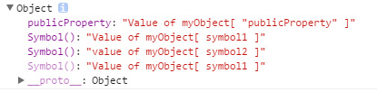
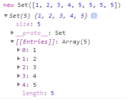
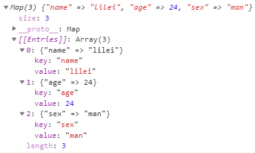
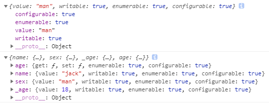
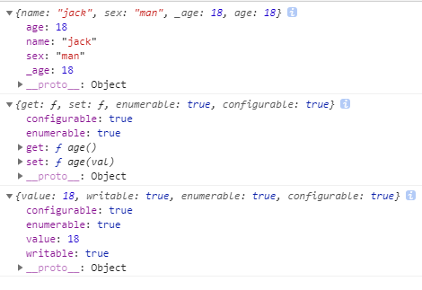

ES6系列-2-新增类型与扩展方法
本篇主要介绍全新的原始数据类型Symbol, 以及ES6新增的数据结构：set与map, 还有对ES6之前数据类型新增了一些扩展方法。
第一章 Symbol
基本属性
ES5 的对象属性名都是字符串，这容易造成属性名的冲突。所以ES6新引入了一种全新的原始数据类型Symbol。
Symbol不是对象，所以不同通过创建对象的方式来创建（譬如 new），它的值通过Symbol函数生成。基本上，它是一种类似于字符串的数据类型。
举个例子
let s1 = Symbol('foo'); let s2 = Symbol('bar'); console.log([s1,s2])//[Symbol(foo), Symbol(bar)] //Symbol 值不能与其他类型的值进行运算 console.log("s1的值为"+s1) //报错，Cannot convert a Symbol value to a string console.log("s1的值为"+s1.toString()) // s1的值为Symbol(foo) let s3 = Symbol(); let s4 = Symbol(); console.log(s3===s4);//false ,就算参数相同，symbol函数每次返回的值都是不相等的，这就可以用于对象属性命名上 let s5="hello"; let s6="hello"; console.log(s5===s6);//true
作为属性名
由于每一个 Symbol 值都是不相等的，这意味着 Symbol 值可以作为标识符，可以防止改写或者覆盖
let symbol1=Symbol(),symbol2=Symbol(),symbol3=Symbol(); let myObject = { publicProperty: 'Value of myObject[ "publicProperty" ]', [symbol1]:'Value of myObject[ symbol1 ]' }; myObject[ symbol2 ] = 'value of myObject[ symbol2 ]'; Object.defineProperty(myObject, symbol3, { value: 'Value of myObject[ symbol1 ]' }); console.log(myObject)
Symbol 值作为对象属性名时，不能用点运算符,所以读取该属性时，必须通过
myObject[ symbol2 ]来读取。Symbol 作为属性名，该属性不会出现在
for...in、for...of循环中，也不会被Object.keys()、Object.getOwnPropertyNames()、JSON.stringify()返回，可以通过
Object.getOwnPropertySymbols来进行读取symbol属性，他返回一个数据[Symbol(), Symbol(), Symbol()]在对象的内部，使用 Symbol 值定义属性时，Symbol 值必须放在方括号之中。
Symbol.for()，Symbol.keyFor()（略）
第二章 新的数据结构-set
ES6新增了两种数据结构，set结构和map结构：首先介绍一下set结构：
基本用法
ES6 提供了新的数据结构 Set。它类似于数组，但是成员的值都是唯一的，没有重复的值。
Set本身是一个构造函数，用来生成 Set 数据结构。
Set函数可以接受一个数组（或者具有 iterable 接口的其他数据结构）作为参数，用来初始化。返回的是一个set结构的数据

可以用作数组和字符串的去重操作:
[...new Set([1,2,3,5,6,7,2,3])] //[1, 2, 3, 5, 6, 7] 数组去重
[...new Set('ababbc')].join('')// "abc" 字符串去重
Array.from(new Set([1,2,3,5,6,7,2,3])) //[1, 2, 3, 5, 6, 7] Array.from方法也可以将 Set 结构转为数组。
实例的属性和方法
属性
Set.prototype.constructor：构造函数，默认就是Set函数。
Set.prototype.size：返回Set实例的成员总数。
方法
四个操作方法（用于操作数据）
add(value)：添加某个值，返回 Set 结构本身。 delete(value)：删除某个值，返回一个布尔值，表示删除是否成功。 has(value)：返回一个布尔值，表示该值是否为Set的成员。 clear()：清除所有成员，没有返回值。举个例子：
let s = new Set(); s.add(2).add("2").add(1).add(1) console.log(s.size)；//3 console.log(s.has("2"));// true console.log(s.has(0));// false s.delete(2); console.log(s.has(2))// false四个遍历方法（三个遍历器生成函数和一个遍历方法）。
keys()：返回键名的遍历器 values()：返回键值的遍历器 entries()：返回键值对的遍历器 forEach()：使用回调函数遍历每个成员举个例子：需要特别指出的是，Set的遍历顺序就是插入顺序。
let set = new Set(['red', 'green', 'blue']); for (let item of set.keys()) { console.log(item); } // red // green // blue for (let item of set.values()) { console.log(item); } // red // green // blue for (let item of set.entries()) { console.log(item); } // ["red", "red"] // ["green", "green"] // ["blue", "blue"] /////可以省略values方法，直接用for...of循环遍历 Set。 for (let x of set) { console.log(x); } // red // green // blue set.forEach((value, key) => console.log(key + ' : ' + value)) // red : red // green : green // blue : blue
扩展运算符（…）内部使用for…of循环，所以也可以用于 Set 结构。相结合后，数组的map和filter方法也可以间接用于 Set 了。
let set = new Set([1, 2, 3, 4, 5]);
set = new Set([...set].filter(x => (x % 2) == 0));
weekSet结构
WeakSet 结构与 Set 类似，也是不重复的值的集合。但是，它与 Set 有两个区别：
- WeakSet 的成员只能是对象，而不能是其他类型的值。
- WeakSet 中的对象都是弱引用，即垃圾回收机制不考虑 WeakSet 对该对象的引用
- WeakSet 没有size属性，没有办法遍历它的成员
- WeakSet 没有clear方法。
第三章 新的数据结构-map
基本用法
JavaScript 的对象（Object），本质上是键值对的集合（Hash 结构），但是传统上只能用字符串当作键。这给它的使用带来了很大的限制。ES6 提供了 Map 数据结构。它类似于对象，也是键值对的集合，但是“键”的范围不限于字符串，各种类型的值（包括对象）都可以当作键。
Map是一个构造函数，创建map对象通过关键字new即可。
Map构造函数参数可以为空，数组或Set,Map等，任何具有 Iterator 接口、且每个成员都是一个双元素的数组的数据结构都可以当作Map构造函数的参数。
const m=new Map(); const s={p:"hello world"} m.set(s,'jack') console.log(m.get(s));//"jack" console.log(m.has(s));// true m.delete(s) console.log(m.has(s));// false //传入一个set结构 const set = new Set([ ['foo', 1], ['bar', 2] ]); const m1 = new Map(set); console.log(m1.get('foo')) // 1 //传入一个map结构 const m2 = new Map([['baz', 3]]); const m3 = new Map(m2); console.log(m3.get('baz')) // 3 //传入一个数组，数组内的元素是键-值对组合的方式（多余的会被忽略，就像例子中的 other）， const n=new Map([ ['name',"lilei"], ['age',24], ['sex',"man",'other'] ]); console.log(n.get('sex')); //man console.log(n);
如果对同一个键多次赋值，后面的值将覆盖前面的值。
如果读取一个未知的键，则返回undefined。
对于引用类型，只有对同一个对象的引用，Map 结构才将其视为同一个键。
如果 Map 的键是一个简单类型的值（数字、字符串、布尔值），则只要两个值严格相等，Map 将其视为一个键：
//0和-0就是一个键，布尔值true和字符串true则是两个不同的键。 //另外，undefined和null也是两个不同的键。虽然NaN不严格相等于自身，但 Map 将其视为同一个键。 let map = new Map(); map.set(-0, 123); map.get(+0) // 123 map.set(true, 1); map.set('true', 2); map.get(true) // 1 map.set(undefined, 3); map.set(null, 4); map.get(undefined) // 3 map.set(NaN, 123); map.get(NaN) // 123实例的属性和方法
属性
size 属性: 返回 Map 结构的成员总数
方法
四个操作方法（用于操作数据）
set(key, value)：设置键名key对应的键值为value,返回是当前的Map对象，因此可以采用链式写法。 get(key)：读取key对应的键值，如果找不到key，返回undefined。 delete(value)：删除某个值，返回一个布尔值，表示删除是否成功。 has(value)：返回一个布尔值，表示某个键是否在当前 Map 对象之中。 clear()：清除所有成员，没有返回值。举个例子：
const map=new Map(); const s={p:"hello world"} const o=()=>{console.log("my function")} map.set(s,'jack').set(o,"fun"); console.log(map.get(o));//fun console.log(map.has(s));// true map.delete(s); console.log(map.size);//1 map.clear(); console.log(map.size);//0四个遍历方法（三个遍历器生成函数和一个遍历方法）。
keys()：返回键名的遍历器。 values()：返回键值的遍历器。 entries()：返回所有成员的遍历器。 forEach()：遍历 Map 的所有成员。举个例子：
const map = new Map([ ['F', 'no'], ['T', 'yes'], ]); for (let key of map.keys()) { console.log(key); } // "F" // "T" for (let value of map.values()) { console.log(value); } // "no" // "yes" for (let item of map.entries()) { console.log(item[0], item[1]); } // "F" "no" // "T" "yes" // 或者 for (let [key, value] of map.entries()) { console.log(key, value); } // "F" "no" // "T" "yes" // 等同于使用map.entries() ,也可以省略entries for (let [key, value] of map) { console.log(key, value); } // "F" "no" // "T" "yes" //forEach方法 map.forEach((value, key, map)=> { console.log("Key: %s, Value: %s", key, value, map); });与其他数据结构的互相转换
Map <=> 数组
1. Map => 数组 //（...)运算符将map转换为数组，转换成数组 //结合数组的map方法、filter方法，可以实现 Map 的遍历和过滤（Map 本身没有map和filter方法） const myMap = new Map() .set(true, 7) .set({foo: 3}, ['abc']); [...myMap] // [ [ true, 7 ], [ { foo: 3 }, [ 'abc' ] ] ] 2. 数组 => Map， //将数组作为构造函数参数即可 new Map([ [true, 7], [{foo: 3}, ['abc']] ]) // Map { // true => 7, // Object {foo: 3} => ['abc'] // }Map <=> 对象
1. Map => 对象 //如果所有 Map 的键都是字符串，它可以无损地转为对象。 //如果有非字符串的键名，那么这个键名会被转成字符串，再作为对象的键名。 function strMapToObj(strMap) { let obj = Object.create(null); for (let [k,v] of strMap) { obj[k] = v; } return obj; } const myMap = new Map() .set('yes', true) .set('no', false); strMapToObj(myMap) // { yes: true, no: false } 2. 对象 => Map function objToStrMap(obj) { let strMap = new Map(); for (let k of Object.keys(obj)) { strMap.set(k, obj[k]); } return strMap; } objToStrMap({yes: true, no: false}) // Map {"yes" => true, "no" => false}Map <=> JSON
Map 转为 JSON 要区分两种情况。一种情况是，Map 的键名都是字符串，这时可以选择转为对象 JSON。//Map 的键名都是字符串 function strMapToJson(strMap) { return JSON.stringify(strMapToObj(strMap)); } let myMap = new Map().set('yes', true).set('no', false); strMapToJson(myMap) // '{"yes":true,"no":false}' //Map 的键名有非字符串，这时可以选择转为数组 JSON function mapToArrayJson(map) { return JSON.stringify([...map]); } let myMap = new Map().set(true, 7).set({foo: 3}, ['abc']); const result=mapToArrayJson(myMap)// '[[true,7],[{"foo":3},["abc"]]]' console.log(typeof result);// stringJSON 转为 Map，正常情况下，所有键名都是字符串。
function jsonToStrMap(jsonStr) { return objToStrMap(JSON.parse(jsonStr)); } jsonToStrMap('{"yes": true, "no": false}') // Map {'yes' => true, 'no' => false}还有一种特殊情况，整个 JSON 就是一个数组，且每个数组成员本身，又是一个有两个成员的数组。这时，它可以一一对应地转为 Map。这往往是 Map 转为数组 JSON 的逆操作。
function jsonToMap(jsonStr) { return new Map(JSON.parse(jsonStr)); } jsonToMap('[[true,7],[{"foo":3},["abc"]]]') // Map {true => 7, Object {foo: 3} => ['abc']}
weekMap结构
WeakMap结构与Map结构类似，也是用于生成键值对的集合。但是，它与 Set 有两个区别：
- WeakMap只接受对象作为键名（null除外），不接受其他类型的值作为键名。
- WeakMap的键名所指向的对象，不计入垃圾回收机制。
WeakMap结构的用途
WeakMap 的键名所引用的对象都是弱引用，即垃圾回收机制不将该引用考虑在内。因此，只要所引用的对象的其他引用都被清除，垃圾回收机制就会释放该对象所占用的内存。也就是说，一旦不再需要，WeakMap 里面的键名对象和所对应的键值对会自动消失，不用手动删除引用。
因此，一个典型应用场景是，在网页的 DOM 元素上添加数据，就可以使用WeakMap结构。当该 DOM 元素被清除，其所对应的WeakMap记录就会自动被移除。
const wm = new WeakMap();
const element = document.getElementById('example');
wm.set(element, 'some information');
wm.get(element) // "some information"
第四章 数据类型的扩展方法
字符串扩展
字符串的遍历器接口
ES6 为字符串添加了遍历器接口，使得字符串可以被for…of循环遍历。
for (let codePoint of 'foo') {
console.log(codePoint)
}
normalize方法
ES6 提供字符串实例的normalize()方法，用来将字符的不同表示方法统一为同样的形式，这称为 Unicode 正规化。
'\u01D1'.normalize() === '\u004F\u030C'.normalize()
// true
includes() && startsWith() && endsWith()
ES6 又提供了三种新方法，来确定一个字符串是否包含在另一个字符串中（ES5中只有indexOf）。
includes()：返回布尔值，表示是否找到了参数字符串。
startsWith()：返回布尔值，表示参数字符串是否在原字符串的头部。
endsWith()：返回布尔值，表示参数字符串是否在原字符串的尾部。
let s = 'Hello world!'; s.startsWith('Hello') // true s.endsWith('!') // true s.includes('o') // true这三个方法都支持第二个参数，表示开始搜索的位置。
let s = 'Hello world!'; s.startsWith('world', 6) // true 针对第n个位置直到字符串结束 s.endsWith('Hello', 5) // true 针对前n个 s.includes('Hello', 6) // false 针对第n个位置直到字符串结束
repeat方法
repeat方法返回一个新字符串，表示将原字符串重复n次。
'x'.repeat(3) // "xxx"
'hello'.repeat(2) // "hellohello"
'na'.repeat(0) // ""
padStart() && padEnd()
ES2017 引入了字符串补全长度的功能。如果某个字符串不够指定长度，会在头部或尾部补全。padStart()用于头部补全，padEnd()用于尾部补全。
'x'.padStart(5, 'ab') // 'ababx'
'x'.padEnd(4, 'ab') // 'xaba'
'xxx'.padStart(2, 'ab') // 'xxx' 等于或大于最大长度，则字符串补全不生效，返回原字符串。
'abc'.padStart(10, '0123456789') // '0123456abc' 补全字符串与原字符串的长度之和超过了最大长度，则会截去超出位数的补全字符串
'x'.padStart(4) // ' x' 省略第二个参数，默认使用空格补全长度
padStart()的常见用途是为数值补全指定位数和提示字符串格式。
'123456'.padStart(10, '0') // "0000123456"
'09-12'.padStart(10, 'YYYY-MM-DD') // "YYYY-09-12"
模板字符串
模板字符串（template string）是增强版的字符串，用反引号 ` 标识。
// 普通字符串
`In JavaScript '\n' is a line-feed.`
// 多行字符串
`In JavaScript this is
not legal.`
// 字符串中嵌入变量
let name = "Bob", time = "today";
`Hello ${name}, how are you ${time}?`
"Hello Bob, how are you today?"
如果使用模板字符串表示多行字符串，所有的空格和缩进都会被保留在输出之中。
变量名写在${}之中，大括号内部可以放入任意的 JavaScript 表达式，可以进行运算，以及引用对象属性 ，还可以调用函数。
let x = 1;
let y = 2;
`${x} + ${y} = ${x + y}`
// "1 + 2 = 3"
`${x} + ${y * 2} = ${x + y * 2}`
// "1 + 4 = 5"
let obj = {x: 1, y: 2};
`${obj.x + obj.y}`
//函数调用
function fn() {
return "Hello World";
}
`foo ${fn()} bar`
数值的扩展
二进制和八进制表示法
ES6 提供了二进制和八进制数值的新的写法，分别用前缀0b（或0B）和0o（或0O）表示。从 ES5 开始，在严格模式之中，八进制就不再允许使用前缀0表示，ES6 进一步明确，要使用前缀0o表示。
0b111110111 === 503 // true
0o767 === 503 // true
Number.isFinite() && Number.isNaN()
ES6 在Number对象上，新提供了Number.isFinite()和Number.isNaN()两个方法。它们与传统的全局方法isFinite()和isNaN()的区别在于，传统方法先调用Number()将非数值的值转为数值，再进行判断，而这两个新方法只对数值有效：
Number.isFinite()对于非数值一律返回false。
Number.isNaN()只有对于NaN才返回true，非NaN一律返回false
isFinite(25) // true
isFinite("25") // true
Number.isFinite(25) // true
Number.isFinite("25") // false
isNaN(NaN) // true
isNaN("NaN") // true
Number.isNaN(NaN) // true
Number.isNaN("NaN") // false
Number.isNaN(1) // false
Number.isFinite(Infinity); // false
Number.isFinite(-Infinity); // false
isFinite(Infinity); // false
isFinite(-Infinity); // false
Number.parseInt(), Number.parseFloat()
ES6 将全局方法parseInt()和parseFloat()，移植到Number对象上面，行为完全保持不变。（这样做的目的，是逐步减少全局性方法，使得语言逐步模块化。）
Number.isInteger()
用来判断一个数值是否为整数。
Number.isInteger(25) // true
Number.isInteger(25.1) // false
Number.isInteger(25.0) // true
Number.isSafeInteger()和安全整数
ES6 引入了 Number.MAX_SAFE_INTEGER 和 Number.MIN_SAFE_INTEGER 这两个常量（2^53 和 -2^53），超出这两个常量js就无法精确表示了。Number.isSafeInteger()则是用来判断一个整数是否落在这个范围之内。
MATH 对象的扩展
ES6 在 Math 对象上新增了 17 个与数学相关的方法。所有这些方法都是静态方法，只能在 Math 对象上调用。
Math.trunc 方法用于去除一个数的小数部分，返回整数部分。
Math.trunc(4.1) // 4 Math.trunc(-4.1) // -4 Math.trunc(-0.1234) // -0 //对于非数值，Math.trunc内部使用Number方法将其先转为数值 Math.trunc('123.456') // 123 Math.trunc(true) //1 Math.trunc(false) // 0 Math.trunc(null) // 0 //对于空值和无法截取整数的值，返回NaN。 Math.trunc(NaN); // NaN Math.trunc('foo'); // NaN Math.trunc(); // NaN Math.trunc(undefined) // NaNMath.sign 方法用来判断一个数到底是正数、负数、还是零。对于非数值，会先将其转换为数值。
// 它会返回五种值。 // 参数为正数，返回+1； // 参数为负数，返回-1； // 参数为 0，返回0； // 参数为-0，返回-0; // 其他值，返回NaN。 Math.sign(-5) // -1 Math.sign(5) // +1 Math.sign(0) // +0 Math.sign(-0) // -0 Math.sign(NaN) // NaN Math.sign('') // 0 Math.sign(true) // +1 Math.sign(false) // 0 Math.sign(null) // 0 Math.sign('9') // +1 Math.sign('foo') // NaN Math.sign() // NaN Math.sign(undefined) // NaNMath.cbrt 方法用于计算一个数的立方根。
Math.cbrt(-1) // -1 Math.cbrt(0) // 0 Math.cbrt(1) // 1 Math.cbrt(2) // 1.2599210498948734 //对于非数值，Math.cbrt方法内部也是先使用Number方法将其转为数值。 Math.cbrt('8') // 2 Math.cbrt('hello') // NaNMath.clz32 方法将参数转为 32 位无符号整数的形式
Math.imul方 法返回两个数以 32 位带符号整数形式相乘的结果，返回的也是一个 32 位的带符号整数。
Math.fround 方法返回一个数的32位单精度浮点数形式。
Math.hypot 方法返回所有参数的平方和的平方根。
Math.expm1 方法: Math.expm1(x)返回 ex - 1，即Math.exp(x) - 1
Math.log1p(x)方法返回1 + x的自然对数，即Math.log(1 + x)。如果x小于-1，返回NaN。
Math.log10(x)返回以 10 为底的x的对数。如果x小于 0，则返回 NaN。
Math.log2(x)返回以 2 为底的x的对数。如果x小于 0，则返回 NaN。
Math.sinh(x) 返回x的双曲正弦（hyperbolic sine）
Math.cosh(x) 返回x的双曲余弦（hyperbolic cosine）
Math.tanh(x) 返回x的双曲正切（hyperbolic tangent）
Math.asinh(x) 返回x的反双曲正弦（inverse hyperbolic sine）
Math.acosh(x) 返回x的反双曲余弦（inverse hyperbolic cosine）
Math.atanh(x) 返回x的反双曲正切（inverse hyperbolic tangent）
指数运算符
ES2016 新增了一个指数运算符（**）,这个运算符的一个特点是右结合，而不是常见的左结合。多个指数运算符连用时，是从最右边开始计算的。
2 ** 3 ** 2;// 512 相当于 2 ** (3 ** 2)
数组的扩展
扩展运算符
简介
将一个数组转为用逗号分隔的参数序列。
console.log(...[1, 2, 3])// 1 2 3 console.log([...[], 1]) //[1]主要用于函数调用, 该运算符将一个数组，变为参数序列
function add(x, y) { return x + y; } const numbers = [4, 38]; add(...[4, 38]);//42由于扩展运算符可以展开数组，所以不再需要apply方法，将数组转为函数的参数了。
// 在函数后面加上apply就等同于调用执行了函数,apply接受的第一个参数仍是运行函数的作用域，第二个是参数数组 Math.max.apply(null, [14, 3, 77]);//77 // ES6 的写法 Math.max(...[14, 3, 77]);//77 // 等同于 Math.max(14, 3, 77);//77用途
复制数组(浅拷贝)
const a1 = [1, {x:2}]; // 写法一 const a2 = [...a1]; // 写法二 const [...a2] = a1; a1[1].y=3; console.log(a1);//[1,{x: 2, y: 3}] console.log(a2);//[1,{x: 2, y: 3}] //注意是浅拷贝合并数组(浅拷贝，同上)
const arr1 = ['a', 'b']; const arr2 = ['c']; const arr3 = ['d', 'e']; // ES5 的合并数组 arr1.concat(arr2, arr3); // [ 'a', 'b', 'c', 'd', 'e' ] // ES6 的合并数组 [...arr1, ...arr2, ...arr3]与解构赋值结合：
const [first, ...rest] = [1, 2, 3, 4, 5]; //如果将扩展运算符用于数组赋值，只能放在参数的最后一位，否则会报错。 const [...butLast, last] = [1, 2, 3, 4, 5]; //报错字符串
//扩展运算符还可以将字符串转为真正的数组。 [...'hello'] // [ "h", "e", "l", "l", "o" ]
实现了 Iterator 接口的对象
任何定义了遍历器（Iterator）接口的对象，都可以用扩展运算符转为真正的数组。let nodeList = document.querySelectorAll('div');//得到类数组 let array = [...nodeList]; //转化成真正数组Map 和 Set 结构，Generator 函数
只要具有 Iterator 接口的对象，都可以使用扩展运算符：let map = new Map([ [1, 'one'], [2, 'two'], [3, 'three'], ]); let arr = [...map.keys()]; // [1, 2, 3] const go = function*(){ yield 1; yield 2; yield 3; }; [...go()] // [1, 2, 3]
Array.from
Array.from方法用于将两类对象转为真正的数组：类似数组的对象（array-like object）和可遍历（iterable）的对象（包括 ES6 新增的数据结构 Set 和 Map）
Array.of
用于将一组值，转换为数组。
Array.of(3, 11, 8) // [3,11,8]
Array.of(3) // [3]
Array.of(3).length // 1
数组实例的 copyWithin()
在当前数组内部，将指定位置的成员复制到其他位置（会覆盖原有成员），然后返回当前数组。也就是说，使用这个方法，会修改当前数组。
//Array.prototype.copyWithin(target(必选), start = 0（可选）, end = this.length（可选）)
[1, 2, 3, 4, 5].copyWithin(0, 3);
//[4, 5, 3, 4, 5]
//上面代码表示将从 3 号位直到数组结束的成员（4 和 5），复制到从 0 号位开始的位置，结果覆盖了原来的 1 和 2。
// 将3号位复制到0号位
[1, 2, 3, 4, 5].copyWithin(0, 3, 4)
// [4, 2, 3, 4, 5]
数组实例的 find() 和 findIndex()
数组实例的find方法，用于找出第一个符合条件的数组成员。它的参数是一个回调函数
[1, 4, -5, 10].find((n) => n < 0)
find方法的回调函数可以接受三个参数，依次为当前的值、当前的位置和原数组。
[1, 5, 10, 15].find(function(value, index, arr) {
return value > 9;
}) // 10
findIndex方法的用法与find方法非常类似，返回第一个符合条件的数组成员的位置，如果所有成员都不符合条件，则返回-1。
[1, 5, 10, 15].findIndex(function(value, index, arr) {
return value > 9;
}) // 2
这两个方法都可以接受第二个参数，用来绑定回调函数的this对象。
function f(v){
return v > this.age;
}
let person = {name: 'John', age: 20};
[10, 12, 26, 15].find(f, person); //26
数组实例的fill()
fill方法使用给定值，填充一个数组。用于空数组的初始化非常方便,数组中已有的元素，会被全部抹去。fill方法还可以接受第二个和第三个参数，用于指定填充的起始位置和结束位置。
new Array(3).fill(7)
// [7, 7, 7]
['a', 'b', 'c'].fill(7, 1, 2)
// ['a', 7, 'c']
如果填充的类型为对象，依旧是浅拷贝。
数组实例的 entries()，keys() 和 values()
ES6 提供三个新的方法——entries()，keys()和values()——用于遍历数组。可以用for…of循环进行遍历:
//是对键名的遍历
for (let index of ['a', 'b'].keys()) {
console.log(index);
}
// 0
// 1
//对键值的遍历
for (let elem of ['a', 'b'].values()) {
console.log(elem);
}
// 'a'
// 'b'
//对键值对的遍历
for (let [index, elem] of ['a', 'b'].entries()) {
console.log(index, elem);
}
// 0 "a"
// 1 "b"
数组实例的 includes()
与字符串的includes方法类似。返回一个布尔值，表示某个数组是否包含给定的值。ES2016 引入了该方法：
[1, 2, 3].includes(2) // true
[1, 2, 3].includes(3, 3); // false， 第二个参数表示搜索的起始位置，默认为0。
数组实例的 flat()，flatMap()
flat()用于将嵌套的数组“拉平”，变成一维的数组。该方法返回一个新数组，对原数据没有影响。
//flat()默认只会“拉平”一层，接收一个参数表示想要拉平的层数，默认为1。
[1, 2, [3, [4, 5]]].flat()
// [1, 2, 3, [4, 5]]
[1, 2, [3, [4, 5]]].flat(2)
// [1, 2, 3, 4, 5]
如果不管有多少层嵌套，都要转成一维数组，可以用Infinity关键字作为参数。
[1, [2, [3]]].flat(Infinity)
flatMap()方法对原数组的每个成员执行一个函数。然后对返回值组成的数组执行flat()方法。该方法返回一个新数组，不改变原数组。且只能展开一层数组。
// 相当于 [[2, 4], [3, 6], [4, 8]].flat()
[2, 3, 4].flatMap((x) => [x, x * 2])
// [2, 4, 3, 6, 4, 8]
数组的空位
数组的空位指，数组的某一个位置没有任何值。比如，Array构造函数返回的数组都是空位。ES6 则是明确将空位转为undefined
函数的扩展
函数参数的默认值
基本用法
ES6 允许为函数的参数设置默认值，即直接写在参数定义的后面。
function log(x, y = 'World') {
console.log(x, y);
}
log('Hello') // Hello World
log('Hello', 'China') // Hello China
log('Hello', '') // Hello
这比ES5中的断路运算要好很多，断路运算存在缺点：如果参数y赋值了，但是对应的布尔值为false，则该赋值不起作用
function log(x, y) {
y = y || 'World';
console.log(x, y);
}
注意：
参数变量是默认声明的，所以不能用let或const再次声明。
function foo(x = 5) { let x = 1; // error const x = 2; // error }使用参数默认值时，函数不能有同名参数。
// 不报错 function foo(x, x, y) { // ... } // 报错 function foo(x, x, y = 1) { // ... }
与解构赋值的配合使用
function foo({x, y = 5}) {
console.log(x, y);
}
foo({}) // undefined 5
foo({x: 1}) // 1 5
foo({x: 1, y: 2}) // 1 2
foo() // TypeError: Cannot read property 'x' of undefined
从上面代码中可以看到：如果函数foo调用时没提供参数，变量x和y就不会生成，从而报错。为了解决这个问题，我们可以提供函数参数的默认值
function foo({x, y = 5}={}) {
console.log(x, y);
}
foo();// undefined 5
对于可以省略的参数，我们可以使用双重默认值。
function fetch(url, { body = '', method = 'GET', headers = {} }={}) {
console.log(method);
}
fetch("/test",{});//正常
fetch("/test");//正常运行，不会报错
函数的 length 属性
函数的length属性，将返回没有指定默认值的参数个数。也就是说，指定了默认值后，length属性将失真
(function (a) {}).length // 1
(function (a = 5) {}).length // 0
(function (a, b, c = 5) {}).length // 2
作用域
一旦设置了参数的默认值，函数进行声明初始化时，参数会形成一个单独的作用域。等到初始化结束，这个作用域就会消失。这种语法行为，在不设置参数默认值时，是不会出现的。
var x = 1;
function f1(x, y = x) {
console.log(y);
}
f1(2) // 2
//解释：参数y的默认值等于变量x。调用函数f1时，参数形成一个单独的作用域。在这个作用域里面，默认值变量x指向第一个参数x，而不是全局变量x，所以输出是2。
function f2(y = x) {
let x = 2;
console.log(y);
}
f2() // 1
//解释：函数f2调用时，参数y = x形成一个单独的作用域。这个作用域里面，变量x本身没有定义，所以指向外层的全局变量x。函数调用时，函数体内部的局部变量x影响不到默认值变量x。
//如果此时，全局变量x不存在，f2就会报错。
应用
利用参数默认值，可以指定某一个参数不得省略，如果省略就抛出一个错误。
function throwIfMissing() {
throw new Error('Missing parameter');
}
function foo(mustBeProvided = throwIfMissing()) {
return mustBeProvided;
}
foo() // Error: Missing parameter
rest 参数
ES6 引入 rest 参数（形式为…变量名），用于获取函数的多余参数，这样就不需要使用arguments对象了。rest 参数搭配的变量是一个数组，该变量将多余的参数放入数组中。
function add(...values) {
let sum = 0;
for (var val of values) {
sum += val;
}
return sum;
}
console.log(add(2, 5, 3, 9, 2)); //21
rest 参数之后不能再有其他参数（即只能是最后一个参数），否则会报错。
function f(a, ...b, c) {
// ...
}//报错
严格模式
从 ES5 开始，函数内部可以设定为严格模式。
function doSomething(a, b) {
'use strict';
// code
}
ES2016 做了一点修改，规定只要函数参数使用了默认值、解构赋值、或者扩展运算符，那么函数内部就不能显式设定为严格模式，否则会报错。
name 属性
var f = function () {};
console.log(f.name) // "f" ES5 会返回空
const bar = function baz() {};
console.log(bar.name) // "baz" ES5和 ES6 返回结果一致
(new Function()).name // "anonymous" 含义为“匿名”
箭头函数
var sum = (num1, num2) => num1 + num2;
// 等同于
var sum = function(num1, num2) {
return num1 + num2;
}
如果箭头函数中只有一个语句，可以省略return;
使用注意点
函数体内的this对象，就是定义时所在的对象，而不是使用时所在的对象。
不可以当作构造函数，也就是说，不可以使用new命令，否则会抛出一个错误。
不可以使用arguments对象，该对象在函数体内不存在。如果要用，可以用 rest 参数代替。
不可以使用yield命令，因此箭头函数不能用作 Generator 函数。
双冒号运算符
“函数绑定”（function bind）运算符是并排的两个冒号（::），双冒号左边是一个对象，右边是一个函数。该运算符会自动将左边的对象，作为上下文环境（即this对象），绑定到右边的函数上面。用来取代call、apply、bind调用。
foo::bar;
// 等同于
bar.bind(foo);
foo::bar(...arguments);
// 等同于
bar.apply(foo, arguments);
正则的扩展
RegExp 构造函数
var regex = new RegExp('xyz', 'i'); //写法一
var regex = new RegExp(/xyz/i); //写法二
// 等价于
var regex = /xyz/i;
但是ES5中不允许这种写法，会报错：
var regex = new RegExp(/xyz/, 'i');
ES6 改变了这种行为。如果RegExp构造函数第一个参数是一个正则对象，那么可以使用第二个参数指定修饰符。而且，返回的正则表达式会忽略原有的正则表达式的修饰符，只使用新指定的修饰符：
new RegExp(/abc/ig, 'i')
字符串的正则方法
字符串对象共有 4 个方法，可以使用正则表达式：match()、replace()、search()和split()。
ES6 将这 4 个方法，在语言内部全部调用RegExp的实例方法，从而做到所有与正则相关的方法，全都定义在RegExp对象上。
新增修饰符
- u修饰符
- y 修饰符
- s 修饰符
新增属性
- unicode属性，表示是否设置了u修饰符
- sticky 属性，表示是否设置了y修饰符
- flags属性，会返回正则表达式的修饰符。
对象的扩展
对象（object）是 JavaScript 最重要的数据结构。ES6 对它进行了重大升级
属性的简洁表示法
ES6 允许直接写入变量和函数，作为对象的属性和方法。
const foo = 'bar';
const baz = {foo};
console.log(baz);//{foo: "bar"}
ES6 允许在对象之中，直接写变量。这时，属性名为变量名, 属性值为变量的值。
let x=1,y=2;
console.log({x,y});//{x: 1, y: 2}
属性简写，方法也可以简写。
let x=1;
const o = {
x,
method() {
return "Hello!";
}
};
console.log(o.x);//1
console.log(o.method());//"Hello!"
VUE中组件的ES6写法也是这样：
const VueComponents = {
data() {
return {}
},
computed: {
$target() {
return null
}
},
method: {
handleClick() {
//...
}
},
mounted() {},
created() {}
}
CommonJS 模块输出一组变量，就非常合适使用简洁写法：
const getItem= ()=> {};
const setItem= ()=> {};
const clear= ()=> {};
module.exports = { getItem, setItem, clear };
// 等同于
module.exports = {
getItem: getItem,
setItem: setItem,
clear: clear
};
属性名表达式
JavaScript 定义对象的属性，有两种方法。
// 方法一
obj.foo = true;
// 方法二
obj['a' + 'bc'] = 123;
ES6 允许字面量定义对象时，用方法二（表达式）作为对象的属性名，即把表达式放在方括号内。
let propKey = 'foo';
let obj = {
[propKey]: true,
['a' + 'bc']: 123,
['h' + 'ello']() {
return 'hi';
}
};
属性名表达式如果是一个对象，默认情况下会自动将对象转为字符串[object Object]，这一点要特别小心。
const keyA = {a: 1};
const keyB = {b: 2};
const myObject = {
[keyA]: 'valueA',
[keyB]: 'valueB'
};
myObject // Object {[object Object]: "valueB"}
方法的 name 属性
函数的name属性，返回函数名。对象方法也是函数，因此也有name属性
const o = {
x,
method() {
return "Hello!";
}
};
console.log(o.x.name);//undefined
console.log(o.method.name)// method
bind方法创造的函数，name属性返回bound加上原函数的名字；Function构造函数创造的函数，name属性返回anonymous
(new Function()).name // "anonymous"
var doSomething = function() {
// ...
};
doSomething.bind().name // "bound doSomething"
属性的可枚举性和遍历
可枚举性
对象的每个属性都有一个描述对象（Descriptor），用来控制该属性的行为。Object.getOwnPropertyDescriptor方法可以获取该属性的描述对象。
let obj = { foo: 123 };
console.log(Object.getOwnPropertyDescriptor(obj, 'foo'))
// {
// value: 123,
// writable: true,
// enumerable: true,
// configurable: true
// }
描述对象的enumerable属性，称为“可枚举性”，如果该属性为false，就表示某些操作会忽略当前属性。
目前，有四个操作会忽略enumerable为false的属性。
- for…in循环：只遍历对象自身的和继承的可枚举的属性。
- Object.keys()：返回对象自身的所有可枚举的属性的键名。
- JSON.stringify()：只串行化对象自身的可枚举的属性。
- Object.assign()： 忽略enumerable为false的属性，只拷贝对象自身的可枚举的属性。
属性的遍历
ES6 一共有 5 种方法可以遍历对象的属性：
for…in
Object.defineProperty//for...in循环遍历对象自身的和继承的可枚举属性（不含 Symbol 属性）。Object.keys(obj)
//Object.keys返回一个数组，包括对象自身的（不含继承的）所有可枚举属性（不含 Symbol 属性）的键名。Object.getOwnPropertyNames(obj)
//Object.getOwnPropertyNames返回一个数组，包含对象自身的所有属性（不含 Symbol 属性，但是包括不可枚举属性）的键名。Object.getOwnPropertySymbols(obj)
//Object.getOwnPropertySymbols返回一个数组，包含对象自身的所有 Symbol 属性的键名。Reflect.ownKeys(obj)
//返回一个数组，包含对象自身的所有键名，不管键名是 Symbol 或字符串，也不管是否可枚举举个例子：
const obj={ name:"jack", [Symbol()]:"1" } Object.prototype.age=12; Object.defineProperty(obj, "job", { configurable:true, value:"teacher", writable:true, enumerable:false }) for(let key in obj){ console.log(obj[key]);//"jack" 12 } console.log(Object.getOwnPropertyNames(obj));// ["name", "job"] console.log(Object.getOwnPropertySymbols(obj));// [Symbol()] console.log(Reflect.ownKeys(obj));// ["name", "job", Symbol()]
super 关键字
this关键字总是指向函数所在的当前对象，ES6 又新增了另一个类似的关键字super，指向当前对象的原型对象。
const proto = {
foo: 'hello'
};
const obj = {
foo: 'world',
find() {
return super.foo;
}
};
Object.setPrototypeOf(obj, proto);//setPrototypeOf方法设置一个指定的对象的原型到另一个对象
obj.find() // "hello"
super关键字表示原型对象时，只能用在对象的方法之中，用在其他地方都会报错。
解构赋值
let { x, y, ...z } = { x: 1, y: 2, a: 3, b: 4 };
x // 1
y // 2
z // { a: 3, b: 4 }
变量z是解构赋值所在的对象。它获取等号右边的所有尚未读取的键（a和b），将它们连同值一起拷贝过来。
解构赋值必须是最后一个参数，否则会报错。
let { ...x, y, z } = someObject; // 句法错误
let { x, ...y, ...z } = someObject; // 句法错误
扩展运算符（…）
对象的扩展运算符（…）用于取出参数对象的所有可遍历属性，拷贝到当前对象之中（注意，还是浅拷贝）。
const n={
a:{name:"jack"},
b:2
}
const m={
c:3，
b:4
}
const p={...n,...m};
n.a.name="lilei";
m.c="0";
console.log(p);//a: {name: "lilei"}, b: 4, c: 3} 同名属性后面会覆盖前面的，依旧是浅拷贝
对象的扩展运算符等同于使用Object.assign()方法（下一章会讲到）。
第五章 对象新增方法
Object.is
ES5 比较两个值是否相等，只有两个运算符：相等运算符（==）和严格相等运算符（===）。它们都有缺点，前者会自动转换数据类型，后者的NaN不等于自身，且+0等于-0，因此需要一个新算法来解决这个问题，Object.is接收两个参数，除了刚才提到的两个异常，其他均与===运算符结果一致：
+0 === -0 //true
NaN === NaN // false
Object.is(+0, -0) // false
Object.is(NaN, NaN) // true
Object.assign
Object.assign方法用于对象的合并，第一个参数是目标对象，后面的参数都是源对象
const target = { a: 1, b: 1 };
const source1 = { b: 2, c: 2 };
const source2 = { c: 3 };
Object.assign(target,source1,source2);//{a: 1, b: 2, c: 3}
如果目标对象与源对象有同名属性，或多个源对象有同名属性，则后面的属性会覆盖前面的属性。
如果只有一个参数，如果该参数不是对象，则会先转成对象，然后返回（无法转换null 和 undefined）：
Object.assign(2) Object.assign("2") Object.assign(false) Object.assign(undefined) // 报错 Object.assign(null) // 报错如果非对象参数出现在源对象的位置（即非首参数）,无法转成对象的参数，就会跳过（null 和 undefined不会报错）
let obj = {a: 1}; Object.assign(obj, undefined) === obj // true Object.assign(obj, null) === obj // true拷贝的属性是有限制的，只拷贝源对象的自身属性（不拷贝继承属性），也不拷贝不可枚举的属性（enumerable: false）
const v1 = 'abc'; const v2 = true; const v3 = 10; const obj = Object.assign({}, v1, v2, v3); console.log(obj); // { "0": "a", "1": "b", "2": "c" }，只有字符串的包装对象，会产生可枚举属性。属性名为 Symbol 值的属性，也会被Object.assign拷贝。
其他注意事项
Object.assign方法实行的是浅拷贝，而不是深拷贝。对于嵌套的对象，一旦遇到同名属性，Object.assign的处理方法是替换，而不是添加：
const target = { a: { b: 'c', d: 'e' } } const source = { a: { b: 'hello' } } Object.assign(target, source)// { a: { b: 'hello' } }可以用来处理数组，但是会把数组视为对象
Object.assign([1, 2, 3], [4, 5])// [4, 5, 3]取值函数的处理：
Object.assign只能进行值的复制，如果要复制的值是一个取值函数，那么将求值后再复制。
用途
为对象添加属性/方法
克隆对象
const copy1=source; const copy2=Object.assign({},source); source.name="lilei"; console.log(copy1);//{name: "lilei", sex: "man"} console.log(copy2);//{name: "jack", sex: "man"}原始对象拷贝到一个空对象，就得到了原始对象的克隆；不过只能克隆原始对象自身的值，不能克隆它继承的值。如果想要保持继承链，可以采用下面的代码。
function clone(origin) { let originProto = Object.getPrototypeOf(origin); return Object.assign(Object.create(originProto), origin); }合并多个对象
为属性指定默认值
const DEFAULTS = { logLevel: 0, outputFormat: 'html' }; function processContent(options) { options = Object.assign({}, DEFAULTS, options); }Object.keys
ES5 引入了
Object.keys方法，返回一个数组，成员是参数对象自身的（不含继承的）所有可遍历（enumerable）属性的键名。
ES2017 引入了跟Object.keys配套的Object.values和Object.entries，作为遍历一个对象的补充手段，供for…of循环使用；const source={ name:"jack", sex:"man" } console.log(Object.keys(source));//["name", "sex"]Object.values
方法返回一个数组，成员是参数对象自身的（不含继承的）所有可遍历（enumerable）属性的键值：
const source={ name:"jack", sex:"man" } console.log(Object.values(source));//["jack", "man"]Object.entries()
返回一个数组，成员是参数对象自身的（不含继承的）所有可遍历（enumerable）属性的键值对数组。
const source={ name:"jack", sex:"man", age:20 } console.log(Object.entries(source));//[["name", "jack"],["sex", "man"],["age", 20]]返回值只输出属性名非 Symbol 值的属性：
const source1={ name:"jack", [Symbol()]:"12" } const source2={ [Symbol()]:"12" } console.log(Object.entries(source1));//["name", "jack"] console.log(Object.entries(source2));//[]Object.fromEntries()
Object.fromEntries()方法是Object.entries()的逆操作，用于将一个键值对数组转为对象。Object.fromEntries([ ["name", "jack"], ["sex", "man"] ]);//{name:"jack",sex:"man"}
该方法的主要作用是将键值对的数据结构还原为对象，因此特别适合将 Map 结构转为对象
const entries = new Map([
['foo', 'bar'],
['baz', 42]
]);
Object.fromEntries(entries)
// { foo: "bar", baz: 42 }
ps:截止目前（2019.1.23 chrome和火狐均未实现该方法）
Object.getOwnPropertyDescriptor()
ES5 的Object.getOwnPropertyDescriptor()方法会返回某个对象属性的描述对象（descriptor）。ES2017 引入了Object.getOwnPropertyDescriptors()方法，返回指定对象所有自身属性（非继承属性）的描述对象。
const source={
name:"jack",
sex:"man",
_age:18,
get age(){
return this._age
},
set age(val){
this._age=val>10?10:val;
}
};
console.log(Object.getOwnPropertyDescriptor(source, 'sex'));
console.log(Object.getOwnPropertyDescriptors(source))

作用
解决Object.assign()无法正确拷贝get属性和set属性的问题(主要目的)：
const source={ name:"jack", sex:"man", _age:18, get age(){ return this._age }, set age(val){ this._age=val>10?10:val; } }; const target=Object.assign({},source); console.log(target) console.log(Object.getOwnPropertyDescriptor(source, 'age')) console.log(Object.getOwnPropertyDescriptor(target, 'age'))
我们可以这样解决：const source={ name:"jack", sex:"man", _age:18, get age(){ return this._age }, set age(val){ this._age=val>10?10:val; } }; const target = {}; Object.defineProperties(target, Object.getOwnPropertyDescriptors(source));是配合Object.create()方法，将对象属性克隆到一个新对象。这属于浅拷贝:
const source={ name:"jack", sex:"man", _age:18, get age(){ return this._age }, set age(val){ this._age=val>10?10:val; } }; const clone=(obj)=>Object.create( Object.getPrototypeOf(obj), Object.getOwnPropertyDescriptors(obj)) source.sex="women"; console.log(clone(source)); //{name: "jack", sex: "women", _age: 18}可以实现一个对象继承另一个对象:
const prot={ x:1 } const obj = Object.create( prot, Object.getOwnPropertyDescriptors({ foo: 123, }) ); console.log(obj.x);//1 console.log(obj.foo);//123
__proto__属性
__proto__属性（前后各两个下划线），用来读取或设置当前对象的prototype对象。该属性没有写入 ES6 的正文，而是写入了附录，原因是__proto__前后的双下划线，说明它本质上是一个内部属性，而不是一个正式的对外的 API，只是由于浏览器广泛支持，才被加入了 ES6（__proto__调用的是Object.prototype.__proto__）。简易使用使用下面的Object.setPrototypeOf()（写操作）、Object.getPrototypeOf()（读操作）、Object.create()（生成操作）代替。
Object.setPrototypeOf()
Object.setPrototypeOf方法的作用与__proto__相同，用来设置一个对象的prototype对象，返回参数对象本身。它是 ES6 正式推荐的设置原型对象的方法：
let proto = {};
let obj = { x: 10 };
Object.setPrototypeOf(obj, proto);
proto.y = 20;
proto.z = 40;
obj.x // 10
obj.y // 20
obj.z // 40
如果第一个参数不是对象，会自动转为对象。但是由于返回的还是第一个参数，所以这个操作不会产生任何效果,但是第一个参数如果是undefined或null，就会报错。
Object.setPrototypeOf(1, {}) === 1 // true
Object.setPrototypeOf('foo', {}) === 'foo' // true
Object.setPrototypeOf(true, {}) === true // true
Object.getPrototypeOf()
与Object.setPrototypeOf方法配套，用于读取一个对象的原型对象。
function Obj(){};
const newObj=new Obj();
console.log(Object.getPrototypeOf(newObj)===Obj.prototype);//true
const prop={};
Object.setPrototypeOf(newObj,prop)
prop.x=1;
console.log(newObj.x);//1
console.log(Object.getPrototypeOf(newObj));//{x: 1}
如果参数不是对象，会被自动转为对象。如果是undefined或null，就会报错。